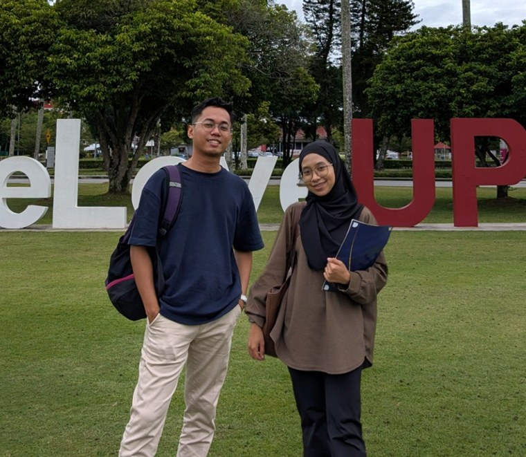

KSSM Tingkatan 4 dan 5
Terokai sains dan matematik
Ubah pemboleh ubah dan lihat kesannya dalam simulasi Matematik, Fizik dan Kimia.
Terokai katalogPratonton simulasi
Matematik · Tingkatan 5
y = a sin(bx) + c
Graf Fungsi Trigonometri (BETA)
Buka simulasi
Semua simulasi
Tapis simulasi
Tiada simulasi ditemui
Cuba kata kunci lain atau lihat semua simulasi.
Dari Guru STEM · Untuk Guru STEM
Fasa Pembangunan
Tentang Makmal STEM
Dihasilkan daripada guru STEM kepada guru STEM sebagai BBM interaktif untuk membantu murid memahami konsep dan teori STEM yang abstrak semasa sesi PdP.
